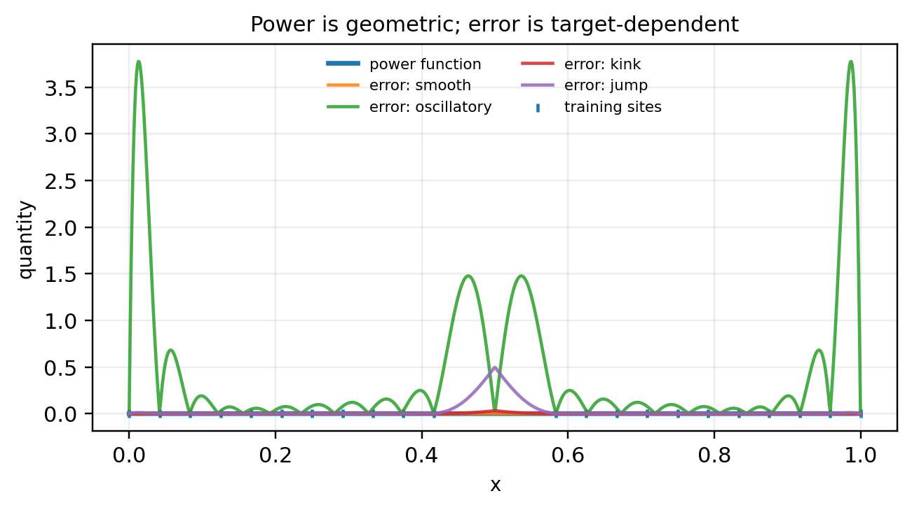
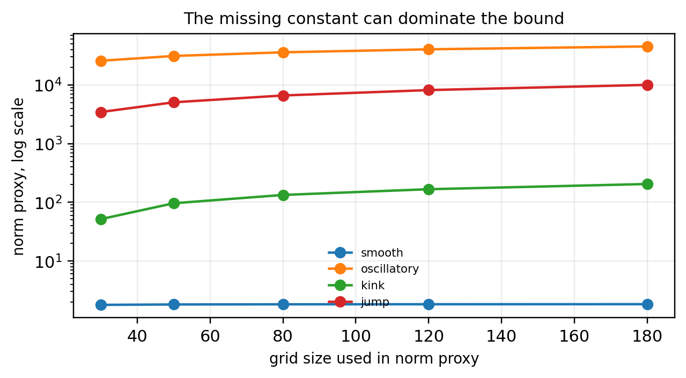
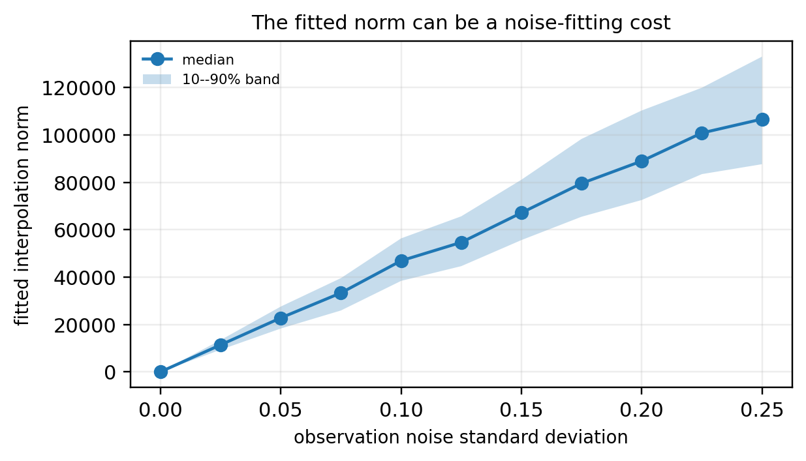

2026-05-14
Claim. The power function is not an error bar by itself. It is the computable geometric factor in a bound whose scale is controlled by an unknown RKHS norm.
Scope. Standard kernel approximation facts; illustrative diagnostics about when the bound becomes practically vacuous.
A recurring trap in kernel methods is that a computable geometric quantity can look like an uncertainty estimate.
The power function is such a quantity. It is mathematically meaningful. It measures how well the design points constrain evaluation at a new point, relative to a chosen kernel.
But the usual pointwise error bound is not a power-function-only statement. It has a hidden constant:
|f(x)-s_X f(x)| \leq P_X(x)\,\|f\|_{\mathcal H}.
The computable part is P_X(x). The difficult part is \|f\|_{\mathcal H}.
In classical approximation theory this is natural: one assumes that the target belongs to the native space and has controlled norm. In machine learning, the target is unknown, noisy observations are common, the kernel is a modeling choice, and the RKHS norm may be enormous, infinite, or simply not connected to the prediction problem.
I use four small diagnostics.
Let X=\{x_1,\ldots,x_n\} be interpolation sites, and let k be a positive definite kernel with RKHS \mathcal H.
The kernel interpolant has the form
s_X f(x)=\sum_{i=1}^n \alpha_i k(x,x_i), \qquad K_X\alpha=f_X,
where (K_X)_{ij}=k(x_i,x_j) and f_X=(f(x_1),\ldots,f(x_n))^\top.
The power function is
P_X^2(x) = k(x,x)-k_X(x)^\top K_X^{-1}k_X(x),
where
k_X(x)=(k(x,x_1),\ldots,k(x,x_n))^\top.
It depends on the kernel, the design, and the evaluation point. It does not depend on the observed values of the target.
The standard deterministic estimate is
|f(x)-s_X f(x)| \leq P_X(x)\,\|f\|_{\mathcal H}.
The theorem separates two quantities that are often conflated in applications. The power function is the design-dependent geometric term. The RKHS norm is the target-dependent scale term, and it is usually the unknown part.
The second term is usually where the statistical difficulty lives.
The examples use a one-dimensional Gaussian kernel. This is only for visualization. The point is not specific to this implementation. The small Cholesky jitter used below is numerical stabilization; it should not be interpreted as a statistical ridge penalty.
Fix the training sites and the kernel. Then the power function is fixed.
Now change only the target.

The design has not changed. The kernel has not changed. The power function has not changed.
Only the target changed.
So P_X(x) cannot be a pointwise error estimate by itself. It does not see the target. It only sees the kernel, the design, and the evaluation point. At most, it is the computable geometric factor in a bound whose missing factor is the target norm.
Table 1 reports the numerical version of Figure 1. Since the design and kernel are fixed, max power is identical for every target. The changing columns show that the actual error depends on the target and on the relevant norm scale, not on the power function alone.
Here, the fitted norm is the computable interpolation norm \|s_X\|_{\mathcal H}, and bound scale means \max_x P_X(x)\,\|s_X\|_{\mathcal H}. This is a diagnostic scale, not the theorem’s true bound with the unknown \|f\|_{\mathcal H}. Therefore it can be smaller than the actual error.
| target | max power | max error | fit norm | bound scale | vacuity ratio |
|---|---|---|---|---|---|
| smooth | 0.000301 | 4.82e-05 | 1.8 | 0.000541 | 0.00027 |
| oscillatory | 0.000301 | 3.78 | 4.95e+04 | 14.9 | 7.46 |
| kink | 0.000301 | 0.032 | 1.57 | 0.000474 | 0.000948 |
| jump | 0.000301 | 0.494 | 152 | 0.0458 | 0.0458 |
Suppose we accept the chosen kernel and ask how expensive different targets are under it.
We use a finite-dimensional proxy:
\|f\|_{\mathcal H,m}^{2} = f(Z)^\top K_Z^{-1}f(Z),
where Z is a fine grid. This is the RKHS norm of the minimum-norm interpolant through the values of f on Z.
It is not the true continuous RKHS norm of f. It is only a diagnostic. It is also affected by conditioning and the stabilization used to invert K_Z, so the point is qualitative rather than metrological. But it is useful: if this proxy grows rapidly as the grid is refined, then the native-space assumption is not giving a stable scale for the target.

For compatible smooth targets, the scale can remain moderate. For rough, oscillatory, or discontinuous targets, the native-space cost can become very large.
The theorem remains correct; the difficulty is that its scale is controlled by a target-complexity constant that the learning problem usually does not supply.
| grid size | jump | kink | oscillatory | smooth |
|---|---|---|---|---|
| 30 | 3452.72 | 51.67 | 25828.36 | 1.78 |
| 50 | 5057.70 | 96.28 | 31171.90 | 1.81 |
| 80 | 6609.07 | 133.37 | 35970.28 | 1.82 |
| 120 | 8166.49 | 166.97 | 40459.34 | 1.83 |
| 180 | 10020.30 | 204.79 | 45304.34 | 1.83 |
In machine learning we usually do not observe a noiseless function. We observe data.
A tempting substitution is to replace the unknown \|f\|_{\mathcal H} by the fitted interpolation norm
\|s_X\|_{\mathcal H}^{2}=y^\top K_X^{-1}y.
This quantity is computable. But it is not the unknown target norm; it is a data-dependent interpolation norm.
When the noise variance is not negligible relative to the signal, the interpolant is forced to pass through the noise, and the resulting fitted norm can be much larger than the norm of the underlying signal.

If ridge regularization is introduced, the fitted norm can be stabilized. But then the original interpolation theorem is no longer being used as stated. One has moved from a deterministic interpolation bound to a different regularized statistical procedure.
That may be reasonable. It is just not the same certificate.
A bound is useful only if its scale is meaningful relative to the prediction problem.
Define the simple diagnostic
V = \frac{\max_x P_X(x) C}{\operatorname{range}(y)},
where C is a candidate norm scale.
If C=\|f\|_{\mathcal H}, this is the formal native-space constant. In practice C is usually unavailable. If one replaces it with a fitted norm or a finite-grid proxy, the number should be interpreted only as a scale diagnostic, not as a theorem.
| target | max power | output range | fit norm | grid norm proxy | V, fit norm | V, grid norm |
|---|---|---|---|---|---|---|
| smooth | 0.000301 | 2 | 1.8 | 1.83 | 0.00027 | 0.000276 |
| oscillatory | 0.000301 | 2 | 4.95e+04 | 4.05e+04 | 7.46 | 6.09 |
| kink | 0.000301 | 0.499 | 1.57 | 167 | 0.000948 | 0.101 |
| jump | 0.000301 | 1 | 152 | 8.17e+03 | 0.0458 | 2.46 |
When these ratios are much larger than one, the bound may be formally true but no longer informative at the scale of the prediction problem.
This is the sense in which the norm term becomes vacuous: not because the power function is wrong, but because the hidden complexity factor is too large, too unstable, or unavailable.
The power function sees:
The power function does not see:
This is why the object is useful as a design diagnostic but fragile as a pointwise uncertainty statement.
The tempting applied substitution is
|f(x)-s_X f(x)| \leq P_X(x)\,\|f\|_{\mathcal H} \qquad\leadsto\qquad \text{error at }x \approx P_X(x).
But this removes the factor that depends on the target.
A slightly less naive substitution is
\|f\|_{\mathcal H} \approx \|s_X\|_{\mathcal H}.
This is also not a theorem. It can be a heuristic, but it is data-dependent and can be dominated by noise, conditioning, and hyperparameters.
The formal theorem controls approximation error for functions in the RKHS. The machine-learning problem is usually to learn an unknown target from finite, noisy data under model uncertainty. These are not the same problem.
The power function is a valid geometric quantity. It tells us something real about the design and the kernel.
But the pointwise error bound is a product:
\text{pointwise error} \leq \text{design geometry} \times \text{unknown target complexity}.
In applications, the first term is computable and visually appealing. The second term is usually unknown, unstable, or incompatible with the modeling assumptions.
A cautious interpretation is therefore:
The power function is a geometry-of-information diagnostic. It is not, without a meaningful and calibrated control of \|f\|_{\mathcal H}, a pointwise prediction-error estimate.
Gregory E. Fasshauer. Meshfree Approximation Methods with MATLAB. World Scientific, 2007.
Holger Wendland. Scattered Data Approximation. Cambridge University Press, 2005.
Robert Schaback and Holger Wendland. “Kernel techniques: From machine learning to meshless methods.” Acta Numerica 15, 2006.
Carl Edward Rasmussen and Christopher K. I. Williams. Gaussian Processes for Machine Learning. MIT Press, 2006.
@misc{miryusupov2026powerfunction,
author = {Miryusupov, Shohruh},
title = {When the Power Function Is Not an Error Bar},
year = {2026},
howpublished = {Research note},
url = {https://www.miryusupov.com/blog/posts/power_function_not_error_bar/index.html}
}